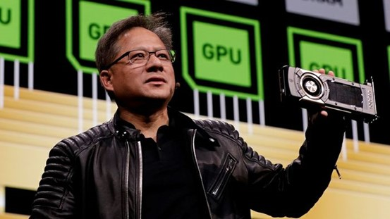

Tech Heroes: Jensen Huang, Linus Torvalds, and Steve Jobs
Jensen Huang
Jensen Huang is a prominent figure in the tech industry, best known as the co-founder, president, and CEO of Nvidia, a leading company in graphics processing units (GPUs) and artificial intelligence (AI) technology. Born on February 17, 1963, in Tainan, Taiwan, Huang moved to the United States during his childhood. He earned a bachelor’s degree in electrical engineering from Oregon State University and a master’s degree from Stanford University.

Why He's Important
In 1993, Huang co-founded Nvidia with Chris Malachowsky and Curtis Priem. Under his leadership, Nvidia has become a powerhouse in the tech world, particularly known for its advancements in AI and gaming technologies. As of 2024, Nvidia’s market capitalization has surpassed $3 trillion, and Huang’s net worth is estimated at $118 billion.
Fun Fact
Huang is also known for his philanthropy, having donated significant amounts to educational institutions like Stanford University and Oregon State University. His journey from a young immigrant to a tech industry leader is truly inspiring.
Linus Torvalds is the creator of the open-source operating system Linux. His contribution has completely transformed the way modern technology works. Torvalds first released the Linux kernel in 1991, and today this open-source project supports servers, supercomputers, and even powers other systems like Android and Chrome OS. As a leader in the open-source community, Torvalds encourages collaboration and knowledge sharing, which has greatly advanced the software industry.
Why He's Important
Linus Torvalds' work has impacted the tech world and helped spread open-source culture. The Linux kernel changed how we use and develop software and became the foundation for many key technologies. His contributions go beyond creating a tool; by encouraging global collaboration, he shaped the culture of the tech community. His philosophy broke away from traditional proprietary software models, making software development more open, transparent, and inclusive.
Steve Jobs was an American business magnate, industrial designer, and entrepreneur who co-founded Apple Inc. Jobs is widely recognized as one of the pioneers of the personal computer revolution of the 1970s and 1980s, along with Apple co-founder Steve Wozniak. His visionary approach to technology and product design transformed multiple industries, including computers, animated movies, music, and mobile devices.
Why He's Important
Jobs was instrumental in the development of products like the iPhone, iPad, and Mac computers. Under his leadership, Apple grew into one of the most valuable companies in the world, with a relentless focus on innovation and design. His impact extended beyond technology, influencing how products are marketed and how consumers interact with digital devices.
Fun Fact
In addition to his work at Apple, Jobs founded NeXT and served as the CEO of Pixar Animation Studios, where he played a key role in the creation of iconic animated films.